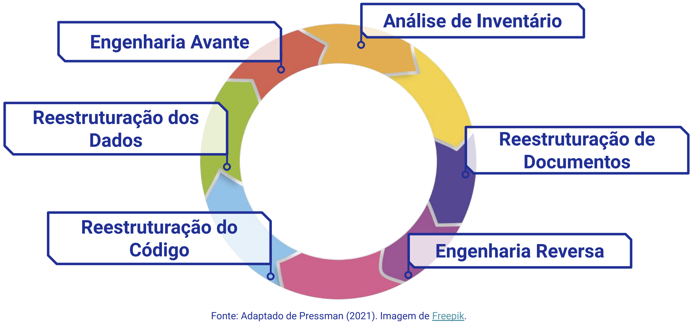

Disciplinas
ENGENHARIA DE SOFTWARE Concluído
Materiais
Vídeo 1 - [UFMS Digital] Engenharia de Software - Módulo 4 - Unidade 2 - Tipos de manutenção de software, reengenharia e engenharia reversa sendProf.ª ministrante: Débora Maria Barroso Paiva
Objetivo
- Entender as principais técnicas usadas para testar software e realizar sua manutenção, incluindo atividades de reengenharia de software.
Fases genéricas dos modelos de processo de software.
DEFINIÇÃO → Ocorre modelagem de software
↓
CONSTRUÇÃO → Ocorre modelagem e implementação de software
↓
SOFTWARE PRODUTO
↓
MANUTENÇÃO → Ocorrem mudanças nos modelos e código-fonte do software
Introdução.
Alterações efetuadas no software depois de sua liberação;
As alterações ocorrem por diversas razões;
As razões para as alterações determinam a categoria de manutenção.
Categorias de manutenção.
Manutenção para reparo de defeitos de software (manutenção corretiva):
- Corrigir erros de codificação normalmente é barato;
- Erros de requisitos são mais onerosos, pois pode ser necessário o reprojeto do sistema.
Manutenção para adaptar o software a um ambiente operacional diferente (manutenção adaptativa):
- Ocorre quando algum aspecto do ambiente do sistema, como o hardware, sistema operacional ou outro software de apoio mudam;
- Novas gerações de hardware;
- Novos sistemas operacionais e software de apoio;
- Atualizações e modificações em equipamentos periféricos e outros elementos de sistema.
Manutenção para adicionar funcionalidade ao sistema ou modificá-la (manutenção evolutiva):
- Necessária quando os requisitos do sistema mudam em resposta às mudanças organizacionais ou de negócios.
- Atender aos pedidos do usuário para:
- Modificar funções existentes;
- Incluir novas funções (novos requisitos);
- Ampliar o escopo do software etc.
Na prática, não fica muito clara a distinção entre esses tipos de manutenção!
Manutenção de software.
Fase mais problemática do ciclo de vida de software;
Pode despender mais de 70% de todo esforço de uma organização;
É benéfico investir esforço no projeto e na implementação de um sistema para reduzir os custos de manutenção.
Cenário atual:
- Migração para novas plataformas;
- Sistemas mal estruturados;
- Melhoramentos para atender novas necessidades;
- Nenhuma preocupação com a arquitetura global;
- Codificação, lógica e documentação ruins.
A manutenção é onerosa porque é preciso empregar esforços para compreender o sistema e analisar o impacto das mudanças propostas.
Boas técnicas de Engenharia de Software, como especificações precisas, uso da orientação a objetos e gerenciamento de configuração contribuem para redução dos custos de manutenção.
Custo da manutenção de softwareCustos não monetários:
- Adiamento de oportunidades de desenvolvimento;
- Redução da qualidade global do software;
- Insatisfação do cliente;
- Insatisfação da equipe;
- Diminuição drástica da produtividade.
Uso de boas técnicas de Engenharia de Software:
- Descrição precisa;
- Desenvolvimento OO;
- Gerenciamento de Configuração;
- Refatoração (prática ágil);
- Testes de regressão automatizados.
Manutenibilidade de software.
A manutenibilidade pode ser definida qualitativamente como a facilidade com que o software pode ser entendido, corrigido, adaptado e/ou melhorado;
É afetada por muitos fatores: cuidado com o projeto, codificação e teste, estruturas padronizadas de documentação etc.
Medidas de manutenibilidade:
- Tempo de reconhecimento do problema;
- Tempo de coleta de ferramentas de manutenção;
- Tempo de análise do problema;
- Tempo de especificação da alteração;
- Tempo de correção ou modificação;
- Tempo de teste local e global;
- Tempo de revisão da manutenção;
- Tempo de recuperação total;
- Número de comandos-fonte adicionados por alteração no programa;
- Número de pessoas-horas despendidos na manutenção;
- Tipo de manutenção;
- Total de pessoas-horas empregadas em cada categoria de manutenção.
Engenharia Reversa.
Engenharia Progressiva:Processo tradicional de ES, caracterizado pelas atividades progressivas do ciclo de vida, que partem de um alto nível de abstração para um baixo nível de abstração.
Engenharia Reversa:Processo inverso à Engenharia Progressiva, caracterizado pelas atividades retroativas do ciclo de vida, que partem de um baixo nível de abstração para um alto nível de abstração.
Processo de exame e compreensão do software existente, para recapturar ou recriar o projeto e decifrar os requisitos atualmente implementados pelo sistema, apresentando-os em um nível mais alto de abstração.
- Redocumentação
- Recuperação de projeto
Extração de abstrações
- Avalia-se o programa antigo, extraindo, a partir do código-fonte:
- Uma especificação significativa do processamento;
- A interface com o usuário;
- As estruturas de dados ou a base de dados do programa.
Reengenharia de Software
A reengenharia de software está relacionada à re-implementação de sistemas legados para torná-los mais fáceis de manter.
Pode envolver uma nova documentação, organização e reestruturação do sistema, conversão do sistema em uma linguagem mais moderna e modificação e atualização da estrutura do software.
Sistemas Legados: são sistemas baseados em computadores e que foram desenvolvidos no passado, frequentemente usando tecnologias mais antigas ou obsoletas.
- sistemas militares;
- sistemas de controle de tráfego aéreo.
A funcionalidade não é alterada e, normalmente, a arquitetura também permanece a mesma.

- um modelo de planilha contendo informação que fornece uma descrição detalhada (por exemplo, tamanho, idade, criticalidade para o negócio) de cada aplicação ativa.
- Avaliar cada aplicação sistematicamente a fim de determinar quais são candidatas à reengenharia.
- Criar um arcabouço de documentação necessário para o suporte a longo prazo de uma aplicação.
- Decidir se apenas as partes do sistema que estão sofrendo modificações serão totalmente documentadas.
- Decidir se haverá redocumentação total.
- Origem no mundo do hardware.
- É o processo de análise de um programa, em um esforço para representá-lo em uma abstração mais alta do que o código-fonte.
- É um processo de recuperação de projeto de dados, arquitetural e procedimental para um programa existente.
- A arquitetura de programa é relativamente sólida, mas módulos individuais foram codificados de modo que torna difícil entendê-los, testá-los e mantê-los;
- O código-fonte é analisado usando uma ferramenta de reestruturação;
- Violações das construções de programação são registradas.
- O código é reestruturado.
- O código reestruturado é revisado e testado para garantir que nenhuma anomalia foi introduzida.
- A documentação interna do código é atualizada.
- Uma arquitetura de dados fraca é difícil de adaptar e aperfeiçoar;
- Viabilidade do programa a longo prazo;
- A arquitetura de dados atual é “dissecada”;
- Os modelos de dados necessários são definidos;
- Objetos de dados e atributos são identificados.
- As estruturas de dados são revisadas quanto à qualidade;
- Se a estrutura de dados é fraca, os dados passam por reengenharia;
- Modificações nos dados resultarão em modificações arquiteturais e de código.
- Transferência das abstrações, modelos lógicos e projeto do sistema para uma implementação física.
- Aplica princípios, conceitos e métodos de ES para recriar a aplicação existente.
- Recupera informações de projeto (Engenharia Reversa), utilizando-as para alterar ou reconstituir o sistema existente a fim de melhorar sua qualidade global.
- Reimplementa a função existente.
- Adiciona novas funções (amplia a capacidade da aplicação antiga).
Considerações Finais
Diferentes tipos de manutenção: corretiva, adaptativa e evolutiva.
Muito esforço gasto na fase de manutenção. Vale a pena investir recursos na fase de desenvolvimento!
Engenharia reversa, reengenharia: há muitas oportunidades interessantes e desafiadoras no mercado. Diversos problemas a serem resolvidos.